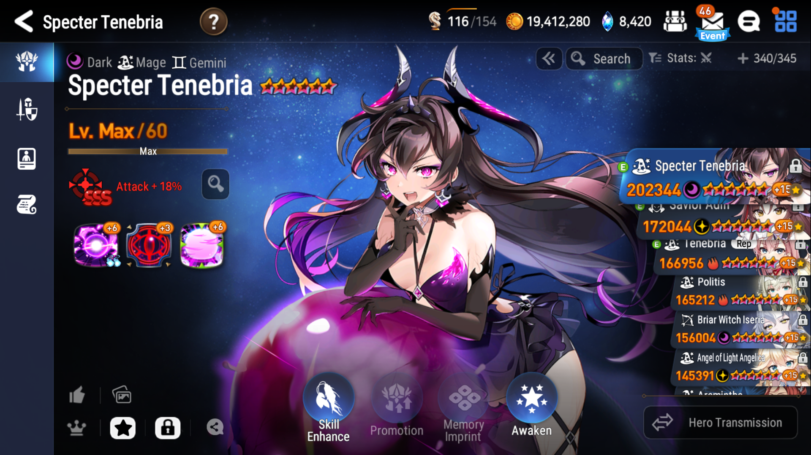
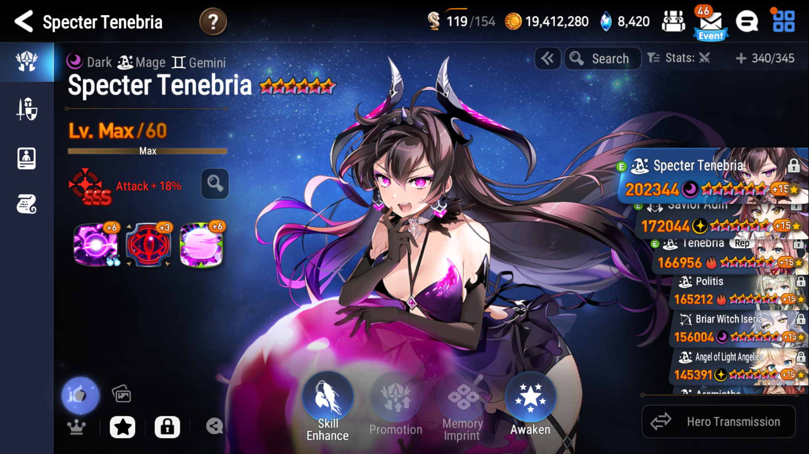
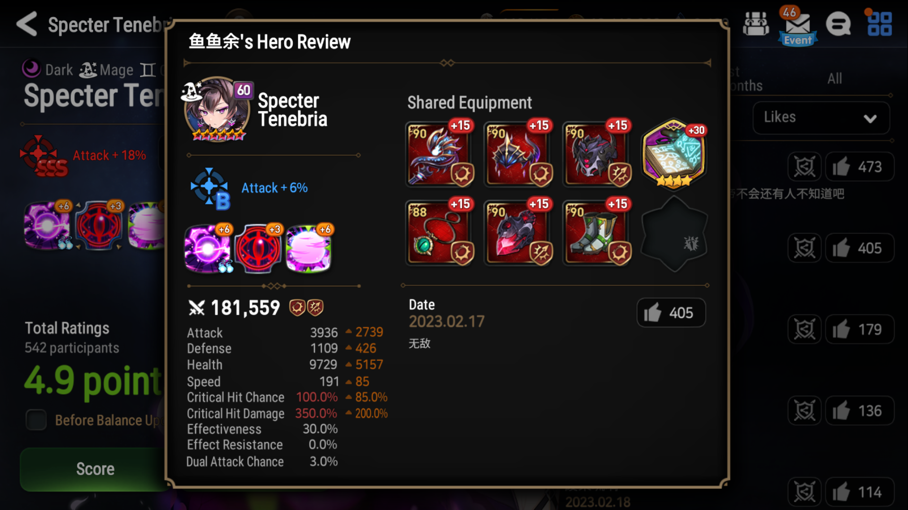

Epic7x: A valuable resource for info. You can find a lot of infomation like base stat hero, artifact infomation in here
Epic7DB: Another valuable resource for info like Epic7X. This site also offers several tools like tier list generator, Labyrinth Camping Simulator or Gear Hero Finder.
Fribbels's Hero library: This site sources hero builds from people using the fribbels E7 optimizer. It will provide everything from average builds, common sets and artifacts, to specific builds from people using the tool.
Step 1: Go to the hero library and scroll down to the hero you need to see the build. 
Step 2: Click to the like button in bottom left (In the blue circle in the picture). 
Step 3: Click on comment to see the build they share 